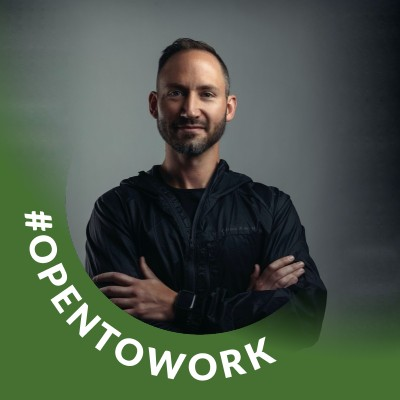

Marcus Jones Portfolio
Work Examples
-
Video Presentation:
- Alpaca Vids Presentation
Recommendations
-
 Bernie DurfeeDirector of EngineeringBernie managed Marcus directly
Bernie DurfeeDirector of EngineeringBernie managed Marcus directlyMarcus was on my team as a Section Lead for the Lamdba School Labs program. The Labs program has hundreds of students working across dozens of teams on software projects at any given time. Section Leads manage a set of those teams to keep them moving forward.
Labs is a highly complex, fast-moving and demanding environment. Section Leads report directly to an Engineering Manager and provide day-to-day support for teams as well as coordination between students and various parts of the Lambda School staff.
Marcus has done a fantastic job as a Section Lead.
I can always depend on Marcus to provide a clear picture of how teams are doing. I can always trust Marcus to work with the teams to provide them guidance and insight.
Marcus has a particularly strong skill in understanding when to provide direct guidance and when to consult with others to find a way forward. He ran teams that focused on everything from eCommerce to data science and never faltered in his ability to help them make their projects happen.
Marcus is an asset to any team and I highly recommend him for any role!
-

David MonsonHead Of Design at InstaworkDavid worked with Marcus but on different teams
I worked with Marcus while he was section lead during Lambda Labs. He was a great team leader, was punctual, professional and very well organized. Marcus did a great job pushing each of the labs teams to the finish line and ensured they reached a successful outcome. He had to tackle many unforeseen roadblocks along the way and handled them very well.
-
Katharine A. HolderfieldUX Designer at BLAZEUX Designer at BLAZEKatharine A. worked with Marcus on the same team
I had the pleasure of working with Marcus during my time as a co-section lead at Lambda school. He was a welcoming and positive person right from day one, being very attentive and helpful as I learned my new role. He often guided our group of section leads through tasks we did not know how to do and did so with patience. He is a very intelligent person and any team would be lucky to have him!
Software Engineering Skills
Technical Skills
- Frontend: CSS, Redux, Hooks, Storybook, Javascript, React, Nextjs, Angular, React Native, SaSS/Less, Grid, Flexbox, Git, Webpack
- Backend: Node, Nexus, Prisma, Express, Postgres, Docker, Git CLI, Vercel, CASL(auth), GraphQL, Docker, JWT, REST, OAuth
- Additional: Agile Project Management, Roadmap Architect, Section Lead, Team Building, Team Lead, DevOps, Branding, Marketing
Technical Management Skills
Code example demonstrating management of a technical project:
1. Team Management- Managed multiple teams of 8-12 students, including team leads, using Agile methodologies for organizing meetings, sprint planning, daily stand-ups, and retrospectives.
2. Communication Skills- Provide feedback to enhance collaboration and improve communication, and assist students with questions or concerns while developing lab projects.
3. Conflict Resolution - Mediate resolutions for internal team issues between students and team leads and conflicts between team members.
4. Resource Allocation - Redistribute resources where needed for team leads and students to ensure successful milestone completion.
5. Performance Evaluation - Track performance of students by assessing the ability to work in a team environment and provide recommendations on students who need to retake the course section.
6. Management Tools - Set up management tools such as Jira, Trello, and other DevOps tasks to enhance team performance.
7. Attendance Verification - Verify attendance for students and employees to ensure accountability and prevent time discrepancies.
8. Payroll Management - Complete payroll and verify team leading hours for accurate and timely compensation.
9. Training and Development- Train new section leads and team leads, lead welcome call meetings for new management, and prepare teams for lab presentations.
10. Greenfield and Brownfield Project Management - Lead the team in managing greenfield projects from conceptualization to product delivery, including planning, budgeting, and execution. Review and analyze brownfield projects for improvements and updates, and coordinate with the team to implement changes.
11. Agile Methodology - Implement Agile methodology to manage projects, including sprint planning, backlog grooming, and daily stand-ups. Use tools such as Scrum to facilitate efficient project management and ensure project progress is tracked and reported accurately.
12. Risk Management - Identify and mitigate project risks, including potential delays, budget overruns, and resource constraints. Develop contingency plans and communicate them to the team to minimize disruptions to project timelines and ensure project success.
13.Stakeholder Management - Collaborate with stakeholders to understand their requirements and expectations, and ensure that project deliverables meet their needs. Maintain regular communication with stakeholders throughout the project lifecycle, provide updates on project progress, and manage expectations effectively.
14. Project Management - Assist teams in research ideas, develop KPIs, outline tech stack scope, then prepare to build projects to meet set timeframes.
Bio
Marcus Jones is a highly skilled individual who possesses a diverse range of talents, enabling him to effectively assist and consult businesses in any capacity. With a background in the arts, Marcus has a keen eye for detail, ensuring that any visual products meet the highest standards of quality. Moreover, his expertise in branding and marketing allows him to delve deeper into the psychology of customer needs and wants, ensuring that any products or services meet those requirements effectively.
Marcus's knowledge and experience in software development place him in a rare and valuable category, enabling him to leverage his skills to achieve outstanding results. Furthermore, his love for people and his exceptional management skills allow him to combine all of his talents, making him a highly sought-after team player.
In summary, Marcus Jones is a uniquely gifted individual whose talents and skills make him an asset to any team. His well-rounded experiences and expertise in various fields enable him to offer a rare blend of skills that any business would be fortunate to have. Engineering the life I was programmed to live